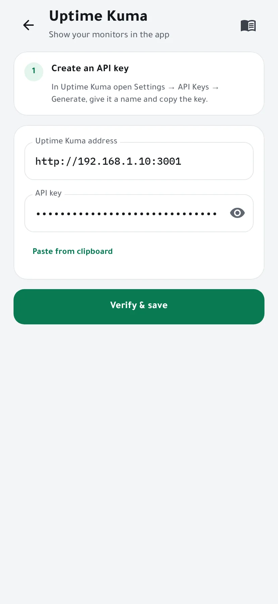
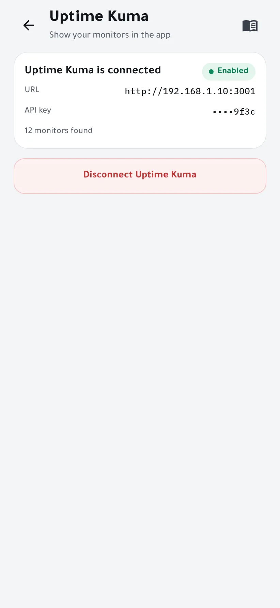
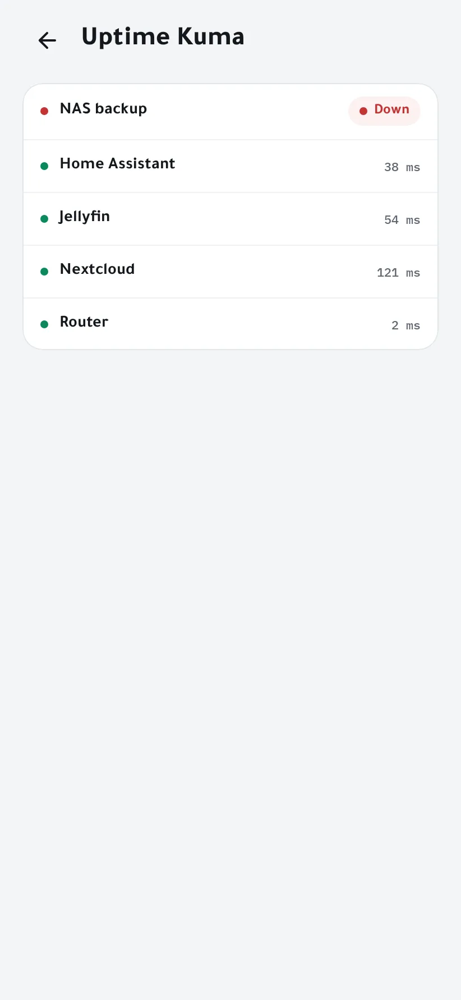

Show your Uptime Kuma monitors
If you run Uptime Kuma, Homelab Pulse can show your monitors next to your server's state. The agent reads Uptime Kuma's metrics with an API key, and the key stays on your server.
You need
- Uptime Kuma 1.21 or newer (the versions with API keys), reachable from your server.
- An admin phone in Homelab Pulse.
-
Create an API key in Uptime Kuma
In Uptime Kuma, open Settings → API Keys → Generate. Name it, for example “Homelab Pulse”, choose whether it expires, and copy the key: it starts with
uk1_. -
Connect it in the app
Open Settings → Uptime Kuma. Enter Uptime Kuma's address as your server reaches it, such as
http://192.168.1.10:3001, orhttp://127.0.0.1:3001when both run on the same machine. Paste the key and tap Verify & save.
-
Done
The wizard shows how many monitors it found. The key is stored encrypted on your server and can't be read back.

-
See your monitors
Tap the Uptime Kuma tile on the home screen to see every monitor's status.

If something goes wrong
- The address can't be reached
- The agent connects from your server, not from your phone: use an address that works on the server.
- The key is refused
- It may have expired or been deleted. Generate a new one in Uptime Kuma.